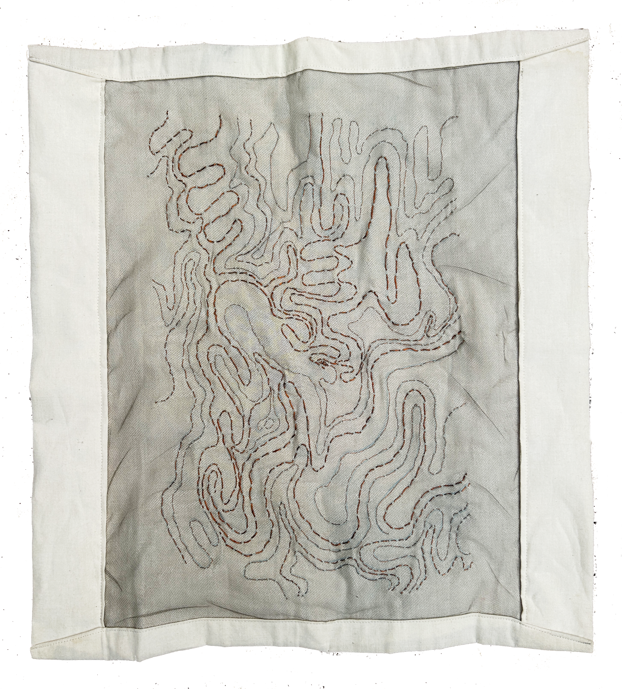
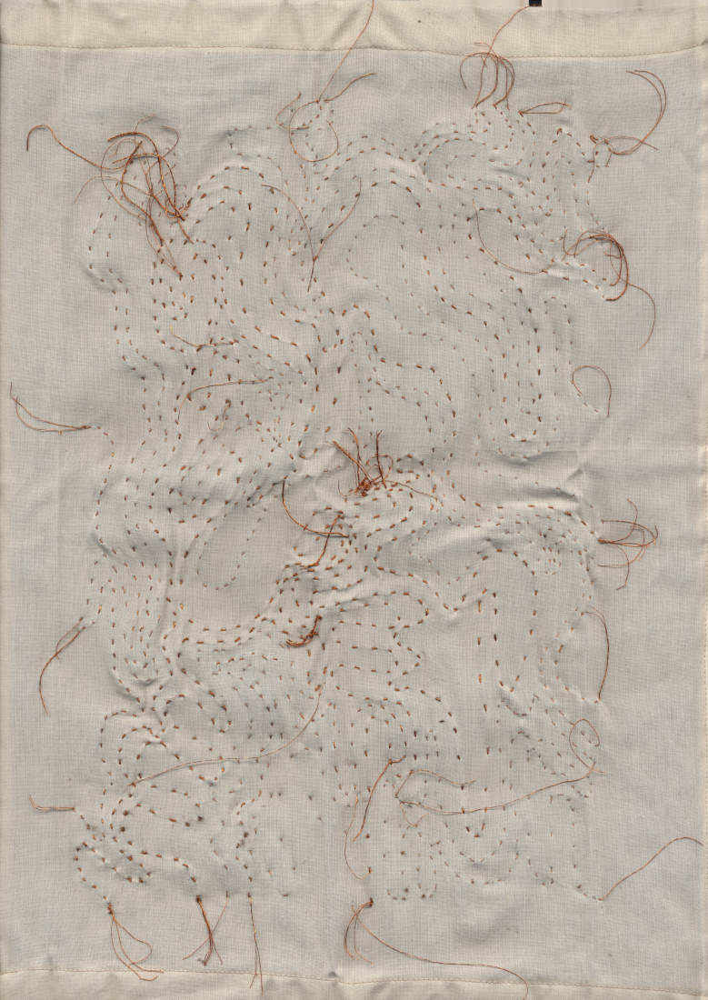

this is a map of an unknown territory, 2025.

here, copper wire of 4 thicknesses is anchored to both nylon tulle and cotton muslin.
the marrying of the tulle with the more substantial muslin suggests that the depiction wants to ground the territory in physicality.

